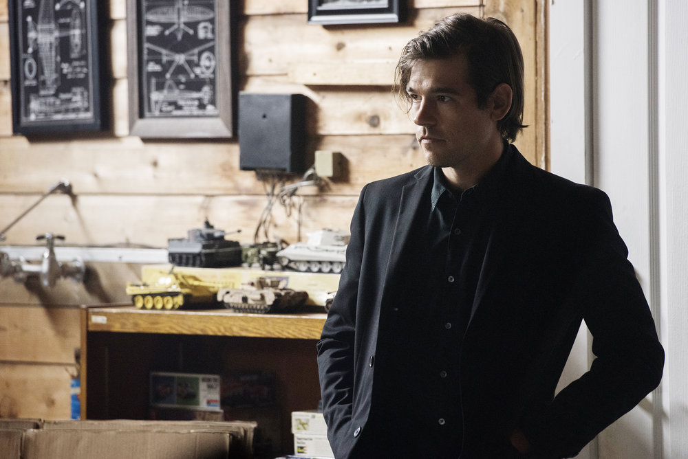

Actor Jason Ralph as Quentin Coldwater, from the SyFy TV show "The Magicians."
Timeline
- 1993
- c.2000
- 2009
- 2014
- 2015
- unknown
- unknown
- unknown
- unknown
- 2018
- 2018
- Born in Montclair, New Jersey USA.
- Meets Julia Wicker, who introduces him to the children's book series Fillory and Further.
- Hospitalised for the first time due to depression aged 16.
- Graduated Magna Cum Laude from Columbia University with a Bachelor's Degree in Literature.
- Enrols at Brakebills University, New York to study magic.
- Begins a romantic relationship with Alice Quinn.
- Crowned one of the kings of Fillory along with Margo Hanson and Eliot Waugh.
- Kills the God, Ember, resulting in the creators of the universe 'turning off' magic.
- Embarks upon a romantic relationship with Eliot while solving a mosaic puzzle, living out an entire lifetime together in another timeline.
- Discovers (to his disappointment) that his Discipline is Repair of Small Objects.
- Dies to save his friends (and the world) in a controversial and emotional scene during a showdown with Everett Rowe.